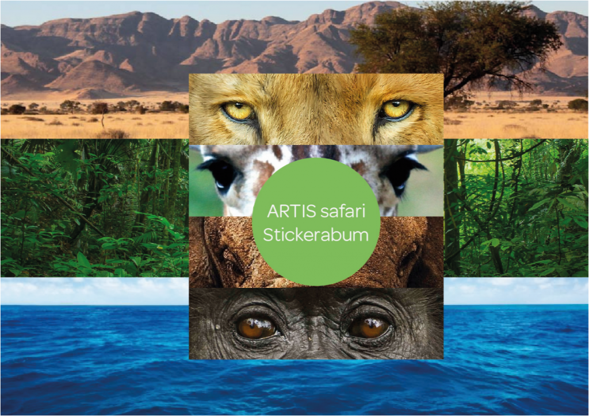
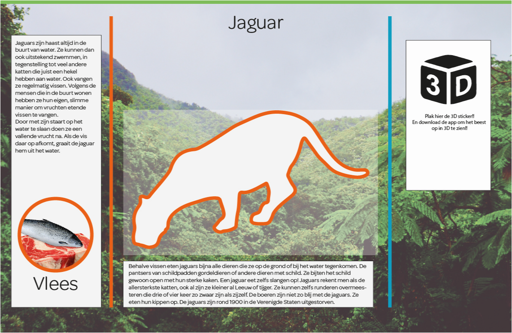

My idea was to make a sticker album for kids in which they could collect stickers of different animals they could find in the zoo.
Each page has an Animal on it and three stickers to collect in total, two stickers with the animal on them and one sticker that could be scanned by a augmented reality app so that the children could see the animal in 3D.
To collect stickers you needed to search the park with special binoculars, with these binoculars the kids would go through the park like normal and at some animal residence the could look trough them and see some information about the animal.
The more information a kid would find the more points they would collect, when they return the binoculars the employ can see how much points they have scored and then give them a corresponding amount of sticker packs.
